Digital Humanities in Russia
a View 🔍 from the Inside
Keynote at El’Manuscript 2021
Daniil Skorinkin
dskorinkin@hse.ru

Plan for this talk
- Me & the Russian DH
- HSE University DH centre
- DH research in Russia
- DH education in Russia
- DH activism in Russia
So... Поехали!🚀
Gagarin was no DH-er.. But he did venture into the unknown using methods no one used before.
And that happenned exactly 60 years ago today, so I could not help it
Me & the Russian DH
That's what I look like:
 my 'Data & the Humanities' talk (video here) at Yandex
my 'Data & the Humanities' talk (video here) at Yandex
My DH(-ish) activities
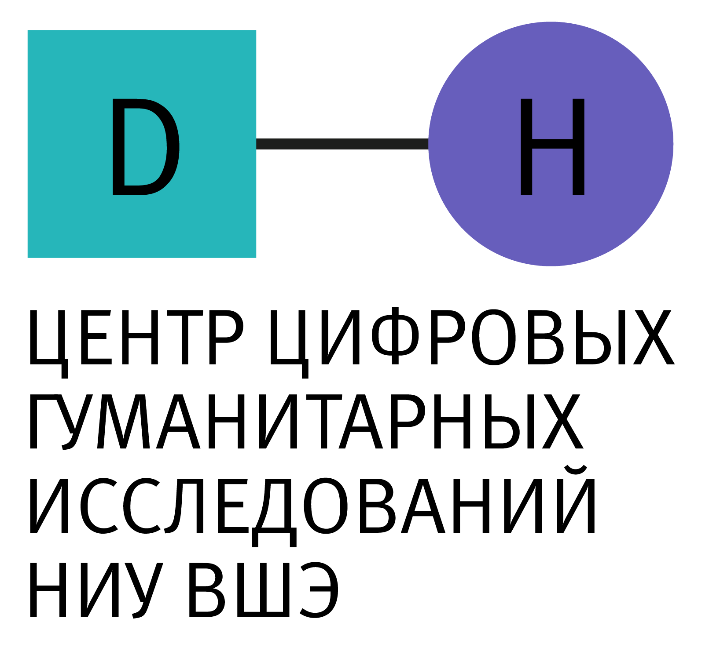 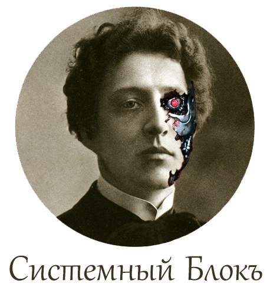
- hum.hse.ru/digital and @dh_hse at Twitter
- DH contact point for the entire Faculty of Humanities
- strong interdisciplinary orientation (literature, cultural studies, linguistics, history, philosophy, media, geography)
- fostering cross-faculty collaboration
- strong focus on research and education (digital literacy courses, first DH Master’s course in Russia)
- director: Anastasia Bonch-Osmolovskaya
And here's what it looks like
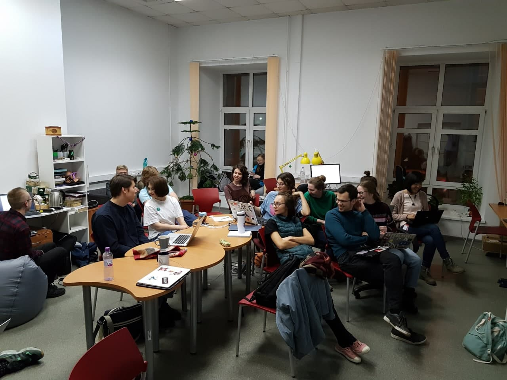What we do here
DH-conferences and meetups
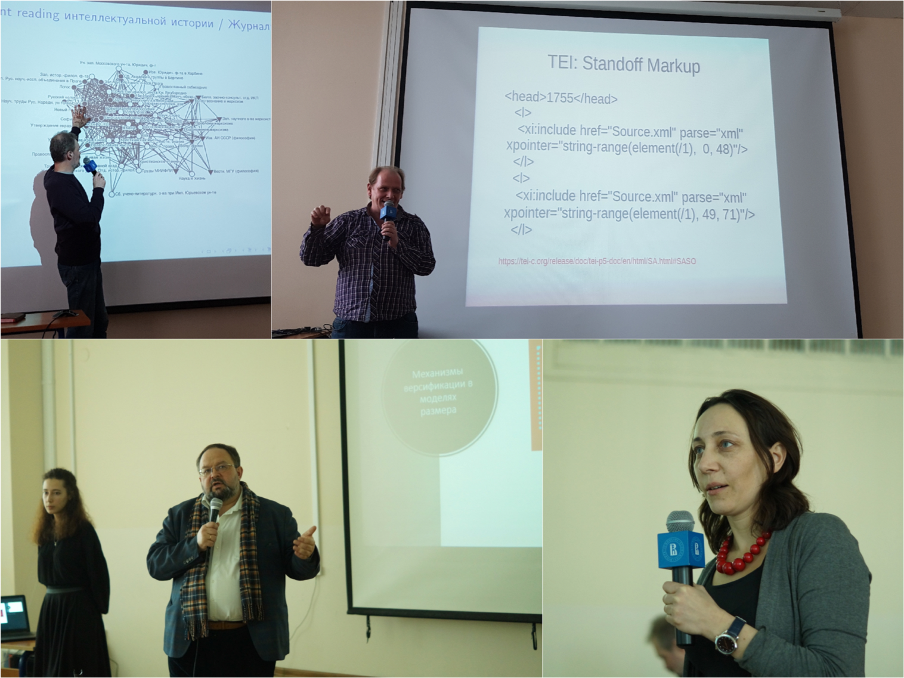Public events for those interested in DH
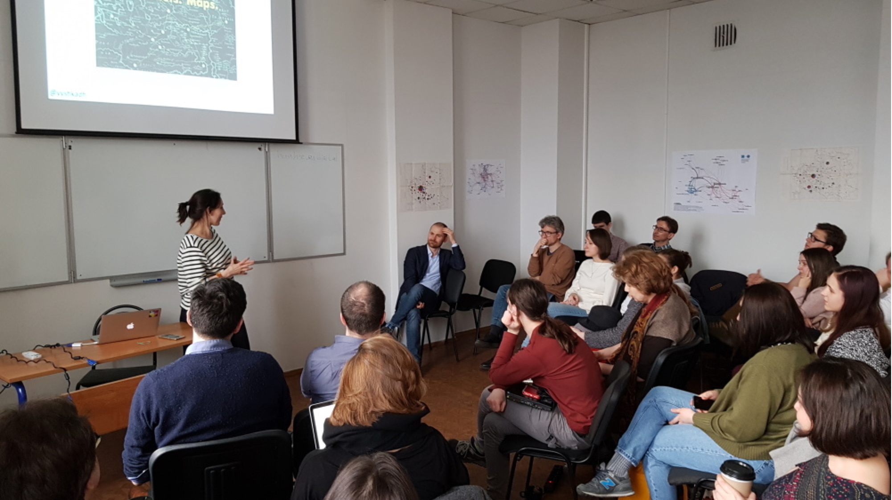DH schools
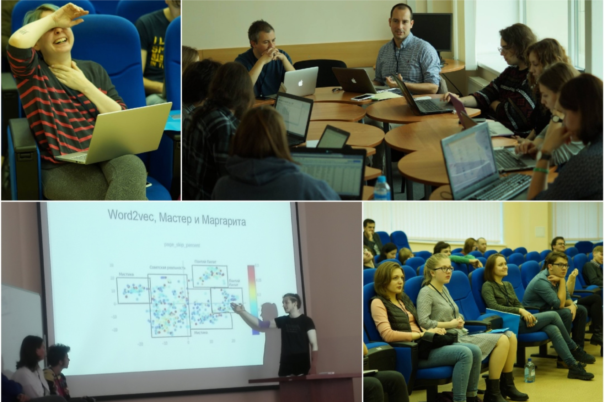DH hackathons
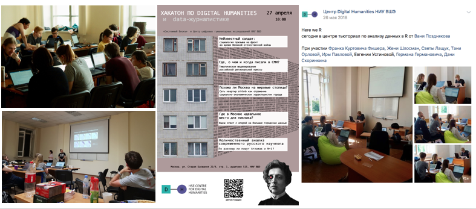..online for the past 13 months, of course
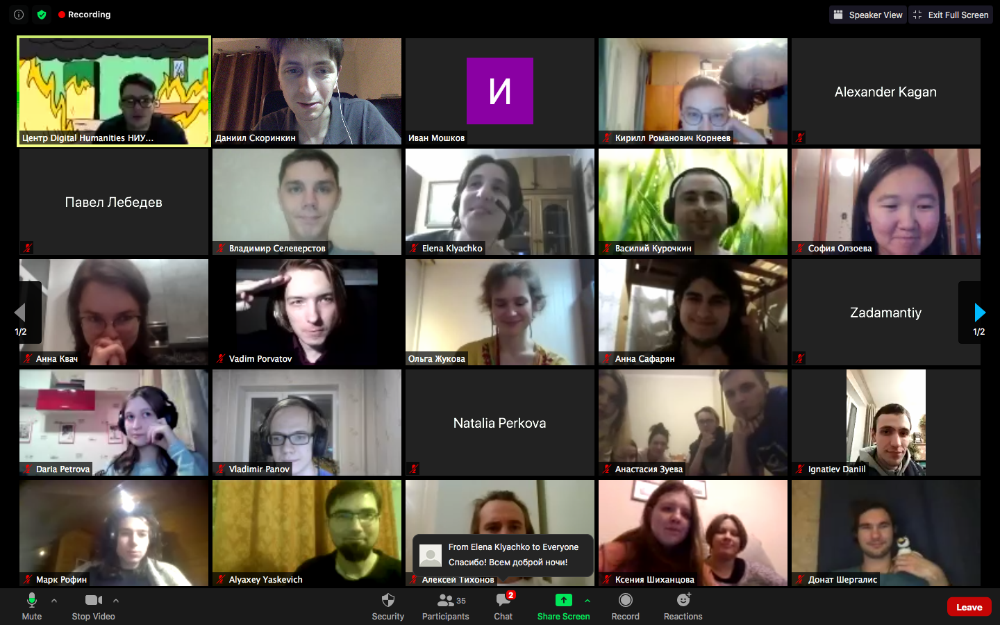DH hackathon on Jan 17 2021 (with 33 teams having presented their results)
So, HSE DH centre in a nutshell:
- DH popularisation
- DH education
- DH research
DH research in Russia
Started a long time ago
- Andrei Bely’s collection of essays, „Symbolism“ (1910)
- quantitative methods applied to the study of rhythm in poetry
- a „formalist prior to the formalists in Russia“
- Nikolai Morozov's 'Linguistic Spectres' — a very early adoption of Lutosławski's stylométrie
- Formalist movement, concept of estrangement (ostranenie)
- Shklovsky’s „Art as Technique“ (1917), looking at structures of literary works
Boris Yarkho (1889–1942)
 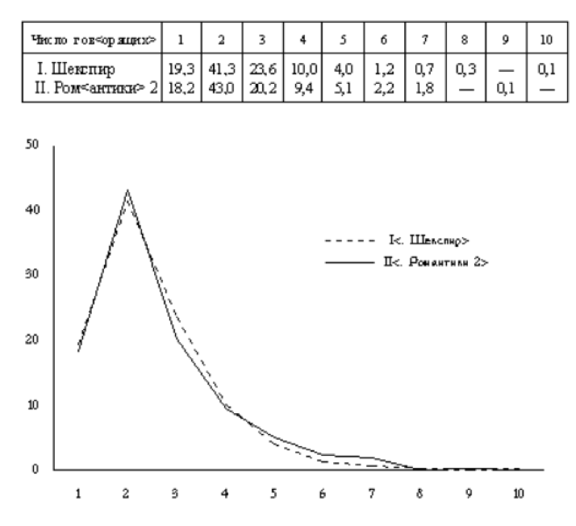
Ярхо Б. И. Распределение речи в пятиактной трагедии: (К вопросу о классицизме и романтизме) // Philologica, 1997, т. 4, № 8/10, 201—284. (written in the 1930-еs)
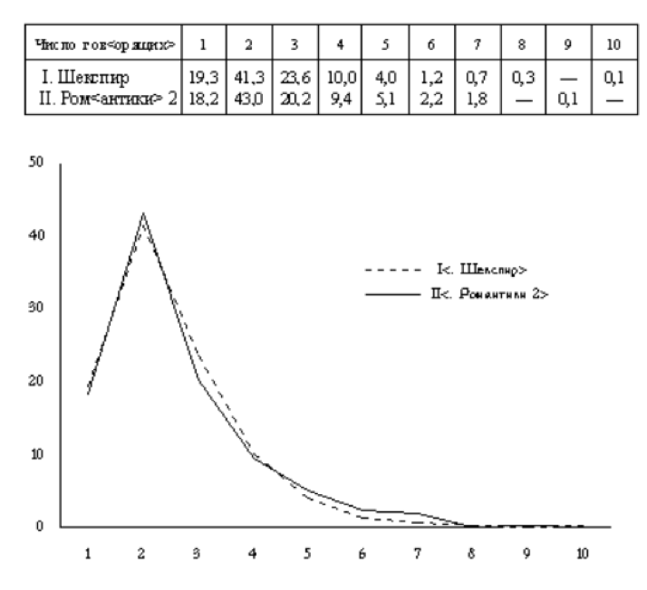
Ярхо Б. И. Распределение речи в пятиактной трагедии: (К вопросу о классицизме и романтизме) // Philologica, 1997, т. 4, № 8/10, 201—284. (written in the 1930-еs)
Vasiljevna Vakhterova (wife of classical philologist Fedor Petrovsky), Boris Yarkho.
Image source: https://urokiistorii.ru/article/52560.
More about the Russian DH Forerunners:
Inna Kizhner at DH2018.Direct link to video
DH research in today's Russia
(with a focus on text-oriented research)
'Computational poetics'
- Orekhov B., Fischer F. Neural reading. Insights from the analysis of poetry generated by artificial neural networks // Orbis Litterarum. — 2020. — Vol. 75. — Number 5. — P. 230—246. DOI: 10.1111/oli.12274
- Skorinkin D., Bonch-Osmolovskaya A. Text mining War and Peace: Automatic extraction of character traits from literary pieces // Digital Scholarship in the Humanities. 2016
- Бонч-Осмоловская А. А., Орехов Б. В. Некоторые применения корпусных методов к наивной поэзии // В кн.: Статьи на случай: Сборник в честь 50-летия Р.Г. Лейбова. Объединенное гуманитарное издательство Ruthenia.ru, 2013.
Quantitative analysis of liturgy
See more at liturcorpora.ru
Stylometry
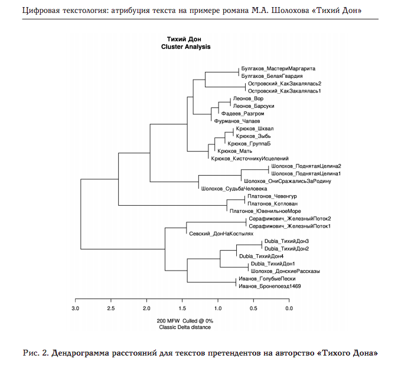 From: Великанова Н. П., Орехов Б. В. Цифровая текстология: атрибуция текста на примере романа М. А. Шолохова «Тихий Дон» // Мир Шолохова. Научно-просветительский общенациональный журнал. — 2019. — № 1. — С. 70—82.(Modern stylometry works rather well on (large) Russian texts
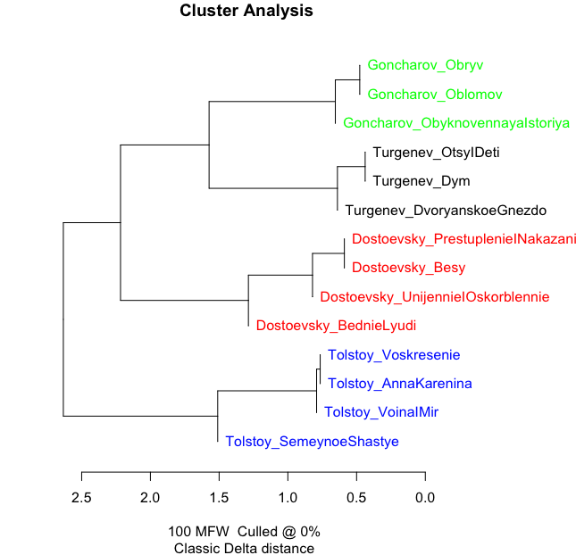Digitally enhanced epigraphy
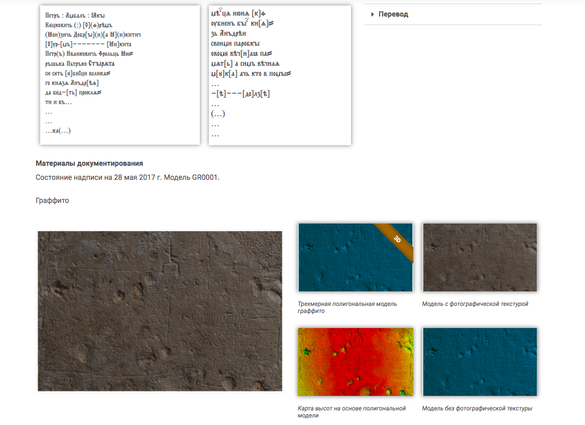 from rssda.su/projects/ep-rus/Digitally enhanced epigraphy
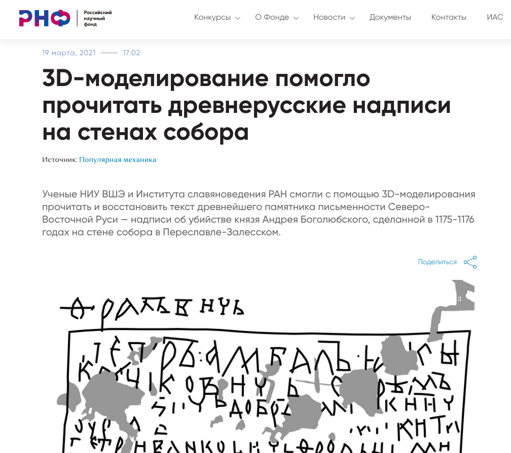 from https://rscf.ru/news/humanitarian-sciences/3d-modelirovanie-pomoglo-prochitat-drevnerusskie-nadpisi/Digital Preservation of Cultural Heritage
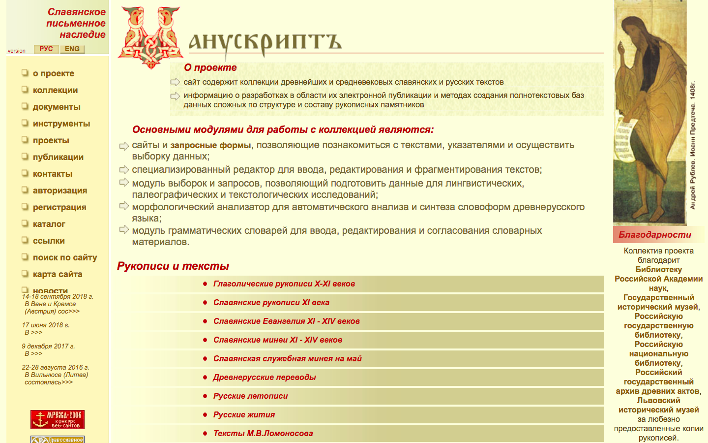 http://manuscripts.ruDigital Preservation and Dissemination
(State-Run initiatives)
Госкаталог РФDigital Preservation and Dissemination
(Private initiatives +volunteers)

Digital Preservation and Dissemination
(Private initiatives +volunteers)
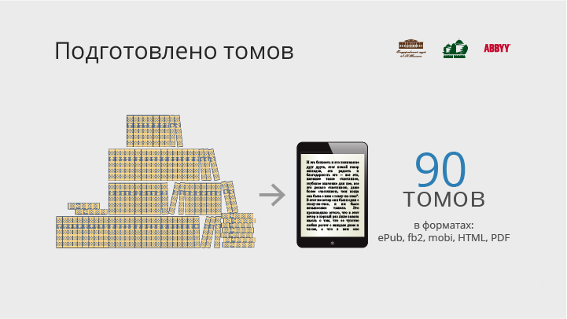Digital Preservation and Dissemination
(Private initiatives +volunteers)
Digital ПётрDigital Preservation and Dissemination
(grassroots initiatives — mostly volunteers)
ПрожитоDigital Preservation and Dissemination
(academic initiatives)
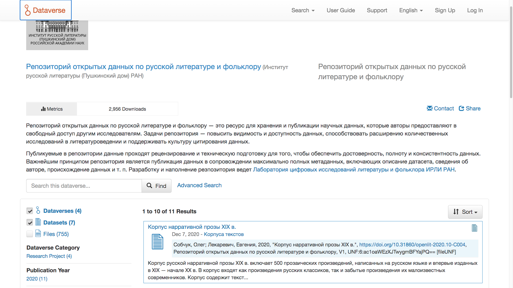 Репозиторий открытых данных по русской литературе и фольклоруDigital Preservation and Dissemination
(academic initiatives)
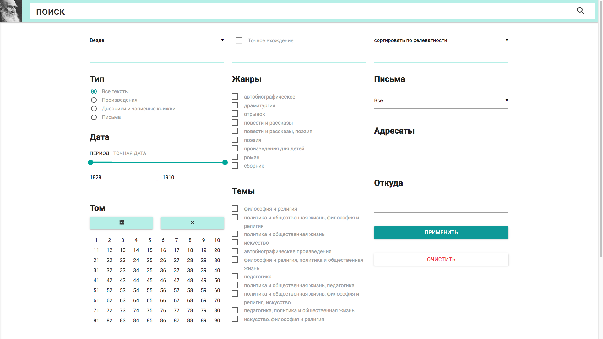 Tolstoy Digital -Digital Preservation and Dissemination
rus.dracor.org — our showcase corpus for digital research or Russian drama
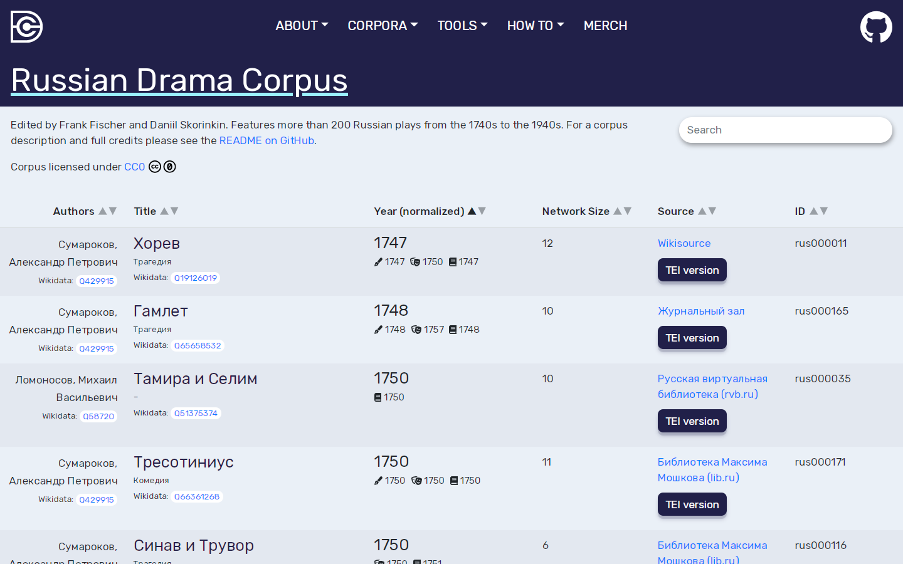RUS.DRACOR.ORG
- Objective: grow and maintain a corpus of Russian-language drama from around 1740 to around 1940
- Main motivation: social network analysis of literary (dramatic) texts
- But also other types of formal quantitative analysis of drama
Under the Dracor hood: TEI markup

Text Encoding Initiative (TEI/XML)
Network analysis of literature
is it a thing?
Network as a model for the 'character system':
"[Networks] make visible specific ‘regions’ within the plot as a whole <...>. Take the characters who are connected to both Claudius and Hamlet <...>: except for Osric and Horatio, whose link to Claudius is however extremely tenuous, they are all killed <...>; what is truly deadly, is the characters’ position in the network, chained to the warring poles of king and prince. Outside of that bold region, no one dies in Hamlet. The tragedy is all there".

Moretti advocates the use of networks
"You reduce the text to characters and interactions, abstract them from everything else, and this process of reduction and abstraction makes the model obviously much less than the original object — just think of this: I am discussing Hamlet, and saying nothing about Shakespeare’s words — but also, in another sense, much more than it, because a model allows you to see the underlying structures of a complex object. It’s like an X-ray: suddenly, you see the region of death <...> which is otherwise hidden by the very richness of the play".
I have used network analysis extensively in my PhD thesis on Tolstoy
Networks are a useful auxiliary model for character-systems
Rostov family keeps 'clustering' together throughout the book

War-related parts have sparser networks

'Aide-de-camp' type heroes have high network 'betweennees'

'Aide-de-camp' type heroes have high network 'betweennees'

Epilogue is the densest part (though two families still cluster apart)

Network analysis in RusDraCor
Initial inspiration: 'Distant Reading' Showcase on German Corpus

Observations from the bird's eye

Emerging play structures...

Goethe-Shakespeare parallelism


And now on Russian data!

Zooming in on Boris Godunov

Zooming in on Boris Godunov

Same as Goethe — too much Shakespeare!
"Не смущаемый никаким иным влиянием, Шекспиру я подражал в его вольном и широком изображении характеров, в небрежном и простом составлении планов…"
("Unaffected by any other [literary] influence, I was following Shakespeare in his free and broad depiction of characters, in his careless and simple construction of settings...")
"Твердо уверенный, что устарелые формы нашего театра требуют преобразования, я расположил свою трагедию по системе Отца нашего Шекспира, и принес ему в жертву пред его алтарь два классические единства, и едва сохранил последнее".
"(Being quite confident that the obsolete forms of our theatre require reformation, I laid out my tragedy according to the system of our Father Shakespeare, and sacrificed two of the three classical unities, and barely managed to preserve the third").
Classicism vs 'Shakespearean plays' in Russian Corpus


Gavrila Pushkin — is he important?
Makes sense to comapre different network centralities here
Degree centrality

| Node | Degree centrality |
|---|---|
| Alexei | 5 |
| Daniil | 1 |
| Katherine | 1 |
| Fyodor | 1 |
| Elena | 1 |
| Kate | 1 |
Node size proprortional to degree:

Betweenness centrality:

Node size proprortional to betweenness:

Gavrila Pushkin: node degree

Node&label size = Node Degree
Gavrila Pushkin: betweenness

Node&label size = Betweenness Centrality
Gavrila the messenger
Pushkin, 'My pedigree'
<...>"About the Tsars the Pushkins moved"<...>
When the Romanoffs upon the throne
The nation called by its Chart --
We upon it laid our hands
Catching other hidden figures with network measures
Bityagovsky (double agent)

A.K. Tolstoi, The Death of Ivan the Terrible (1866)
Kalachnik / kalach baker (yet another agent)

A.N. Ostrovskiy, Dimitry the Impostor and Vasiliy Shujskiy (1866)
Kalachnik speaks for himself
Калачник:Что я-то?! Я не сыщик, не доносчик;
Я — весь народ московский; вот кто я!
Kalachnik:So what about me? I am no whistle blower;
I am the entire people of Moscow, that's what I am!
Review of the play circa 2007
«Довольно загадочной кажется фигура Калачника, темпераментно сыгранного Антоном Хомятовым: с одной стороны, это человек из народа — поборник православной веры, мститель за брата, с другой — «человек в штатском», тайный агент Шуйского, провокатор и шпион. Похоже на то, что его торговля калачами только «прикрытие». Один раз за весь спектакль мы видим лоток на его плече, да и то пустой. Калачник называет себя «народом», но он, пожалуй, ох как непрост?»
Bitkov (spy on Pushkin)

M.A. Bulgakov, "Alexander Pushkin, (the Last Days)" (1935)
Back to macro-analysis
Basic metric: Network Density


Density = 0.5 (3/6) Density = 1 (6/6)
Densities of plays by genre

Densities of plays by genre in RusDraCor

Enough with networks!
Evolution of stage directions
Stage directions, quite literally, don’t count.
Eric Rasmussen
Example of Stage Directions
<stage>Слуги уходят.</stage>
<stage>(Подходит к столу; ему дают место.)</stage>
<stage>Грохот, взрыв, выстрел. Победоносиков распахивает дверь и бросается в квартиру. На нижней площадке фейерверочный огонь. На месте поставленного аппарата светящаяся женщина со свитком в светящихся буквах. Горит слово "Мандат". Общее остолбенение. Выскакивает Оптимистенко, на ходу подтягивает брюки, в ночных туфлях на босы ноги, вооружен. </stage>
Share of stage directions

Verb usage in stage directions

Parts of Speech

(by Dasha Maximova)
FICTIONAL GENDER LANGUAGE STUDIES
<person xml:id="ZhenaLukiLukicha" sex="FEMALE">
<persName>Жена Луки Лукича</persName>
</person>
<person xml:id="Derzhimorda" sex="MALE">
<persName>Держиморда</persName>
</person>
<person xml:id="Hlestakov" sex="MALE">
<persName>Хлестаков</persName>
</person>
<person xml:id="UnterOfitsersha" sex="FEMALE">
<persName>Унтер-офицерша</persName>
</person>
<person xml:id="Korobkin" sex="MALE">
<persName>Коробкин</persName>
</person>
FICTIONAL GENDER LANGUAGE STUDIES

Shiny RusDraCor for Online Network Analysis

DH education in Russia
DH programs in Russian universities
- HSE (Moscow)
- ITMO (Saint-Petersburg)
- Tomsk State University (Tomsk)
- Siberian Federal University (Krasnoyarsk)
- Ural Federal University
- Baltic Federal University (Kaliningrad)
- South Federal University (Rostov-on-Don)
- HSE (Perm)
The 'Moscow-Tartu' DH school
DH activism in Russia
Enthusiast Digitisation Projects
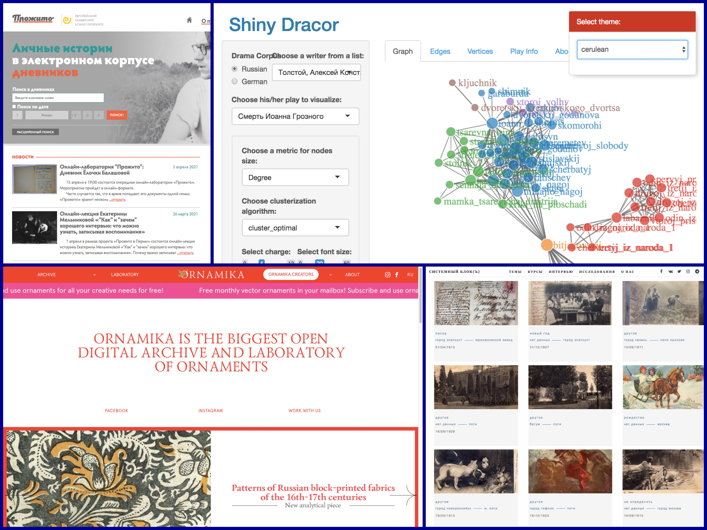Grassroots Media
- Системный Блокъ (Sistemnyj Blok”)
- editor-in-chief: Daniil Skorinkin (that's me)
- main outlet on VK: vk.com/sysblok — > 82 000 users
- also on Facebook: facebook.com/sysblok (another 24 600 users)
- Telegram: https://t.me/sysblok (another 5200 users)
- Instagram instagram.com/sysblok
- website: sysblok.ru